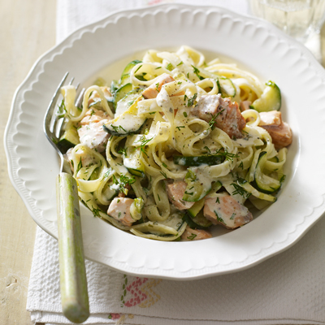

Farne's amazing salmon courgette linguine
A beautifully creamy and healthy dish that the whole
family will enjoy, this salmon and courgette pasta will be served up and
on the table in just 35 minutes.

Ingerdients
- 2.5 courgettes
- 2 salmon fillets
- 300g linguine
- 2 garlic cloves
- 50g red pesto
- ½ lemon
- 200g parmesan cheese
Steps
-
Pre-heat your oven to 180 degrees. Boil a pot of water with ½ tsp of
salt for your pasta.
-
Chop the very top and bottom from your courgette. Slice the courgette
lengthways into strips no thicker than ½cm. Now slice the slices
lengthways to make strands less than ½cm thick. Tip: Really slice
carefully to get thin linguine-like strands.
-
Once the oven has pre-heated rub a little glug of olive oil into the
salmon fillet. Sprinkle a pinch of salt and pepper on both sides then
place the fillet on a baking tray. Cook on the top shelf of the oven for
10 mins then remove.
-
Add the pasta to the rapidly boiling water and cook for 6 mins or until
'al dente'. Tip: 'Al dente' simply means it is cooked through but has a
hint of firmness left in the middle.
-
When the pasta is 3 mins from done heat a tbsp of olive oil in a frying
pan on medium-high heat. Peel and crush the garlic then add this to the
pan for a minute. Once the oil is nice and hot add the courgette strands
into the pan and toss them together with the garlic. Cook the courgettes
until they go a bit floppy. Tip: Do not add salt yet as it'll make the
courgette go soggy.
-
Add the pesto into the frying pan with the courgette and squeeze in the
juice of ½ lemon. Then, add a couple of tbsp of water and ¼ tsp of salt
and a few good grinds of black pepper (don't be shy - it'll really boost
the flavour). Now toss in the drained pasta and remove from the heat.
-
The salmon is likely out of the oven by now so use two forks to pull
apart the meat into little flakes. Discard the skin.
-
Finally, toss the salmon flakes and ¾ of the grated cheese through the
pasta. Serve with the remaining parmesan sprinkled on top and gobble! Oh
and remember to take the garlic clove out as well - it was just there to
add a subtle 'garlic-iness'.
Back